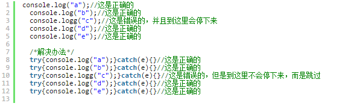
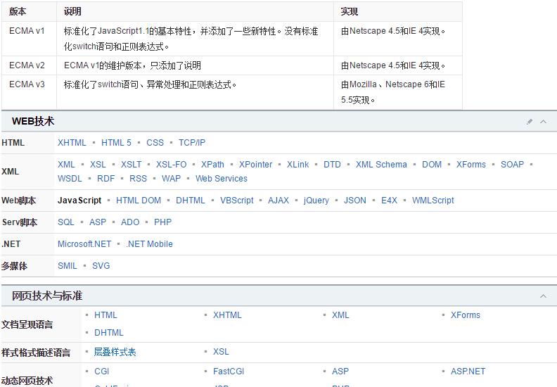

<<<<<<< HEAD
=======
<<<<<<< HEAD
javascript

本词条由
"科普中国"百科科学词条编写与应用工作项目
审核
JavaScript一种直译式脚本语言，是一种动态类型、弱类型、基于原型的语言，内置支持类型。它的解释器被称为JavaScript引擎，为浏览器的一部分，广泛用于客户端的脚本语言，最早是在
HTML(标准通用标记语言下的一个应用）网页上使用，用来给HTML网页增加动态功能。
在1995年时，由Netscape公司的Brendan Eich，在网景导航者浏览器上首次设计实现而成。因为Netscape与SUN合作，Netscape管理层希望它外观看起来像Java，因此取名为JavaScript。但实际上它的语法风格与Self及Scheme较为接近
为了取得技术优势，微软推出了JScript，CEnvi推出ScriptEase，与JavaScript同样可在浏览器上运行。为了统一规格，因为JavaScript兼容于ECMA标准，因此也称为ECMAScript。
- 外文名
- JavaScript
- 发行时间
- 1992年
- 设计者
- Brendan EichBrendan Eich
组成部分
ECMAScript，描述了该语言的语法和基本对象。[2]
文档对象模型（DOM），描述处理网页内容的方法和接口。[2]
基本特点
JavaScript是一种属于网络的脚本语言,已经被广泛用于Web应用开发,常用来为网页添加各式各样的动态功能,为用户提供更流畅美观的浏览效果。通常JavaScript脚本是通过嵌入在HTML中来实现自身的功能的。[3]
1.是一种解释性脚本语言（代码不进行预编译）。[4]
2.主要用来向HTML（标准通用标记语言下的一个应用）页面添加交互行为。[4]
3.可以直接嵌入HTML页面，但写成单独的js文件有利于结构和行为的分离。[4]
4.跨平台特性，在绝大多数浏览器的支持下，可以在多种平台下运行（如Windows、Linux、Mac、Android、iOS等）。
Javascript脚本语言同其他语言一样，有它自身的基本数据类型，表达式和算术运算符及程序的基本程序框架。Javascript提供了四种基本的数据类型和两种特殊数据类型用来处理数据和文字。而变量提供存放信息的地方，表达式则可以完成较复杂的信息处理。
[5]
日常用途
- 嵌入动态文本于HTML页面。[4]
- 对浏览器事件做出响应。[4]
- 读写HTML元素。[4]
- 在数据被提交到服务器之前验证数据。[4]
- 检测访客的浏览器信息。[4]
- 控制cookies，包括创建和修改等。[4]
- 基于Node.js技术进行服务器端编程。[4]
历史
它最初由Netscape的Brendan Eich设计。JavaScript是甲骨文公司的注册商标。Ecma国际以JavaScript为基础制定了ECMAScript标准。JavaScript也可以用于其他场合，如服务器端编程。完整的JavaScript实现包含三个部分：ECMAScript，文档对象模型，浏览器对象模型。[7]
Netscape在最初将其脚本语言命名为LiveScript，后来Netscape在与Sun合作之后将其改名为JavaScript。JavaScript最初受Java启发而开始设计的，目的之一就是“看上去像Java”，因此语法上有类似之处，一些名称和命名规范也借自Java。但JavaScript的主要设计原则源自Self和Scheme。JavaScript与Java名称上的近似，是当时Netscape为了营销考虑与Sun微系统达成协议的结果。为了取得技术优势，微软推出了JScript来迎战JavaScript的脚本语言。为了互用性，Ecma国际（前身为欧洲计算机制造商协会）创建了ECMA-262标准（ECMAScript）。两者都属于ECMAScript的实现。尽管JavaScript作为给非程序人员的脚本语言，而非作为给程序人员的脚本语言来推广和宣传，但是JavaScript具有非常丰富的特性。[8]
发展初期，JavaScript的标准并未确定，同期有Netscape的JavaScript，微软的JScript和CEnvi的ScriptEase三足鼎立。1997年，在ECMA（欧洲计算机制造商协会）的协调下，由Netscape、Sun、微软、Borland组成的工作组确定统一标准：ECMA-262。
特性
JavaScript脚本语言具有以下特点:
(1)脚本语言。JavaScript是一种解释型的脚本语言,C、C++等语言先编译后执行,而JavaScript是在程序的运行过程中逐行进行解释。
(2)基于对象。JavaScript是一种基于对象的脚本语言,它不仅可以创建对象,也能使用现有的对象。
(3)简单。JavaScript语言中采用的是弱类型的变量类型,对使用的数据类型未做出严格的要求,是基于Java基本语句和控制的脚本语言,其设计简单紧凑。
(4)动态性。JavaScript是一种采用事件驱动的脚本语言,它不需要经过Web服务器就可以对用户的输入做出响应。在访问一个网页时,鼠标在网页中进行鼠标点击或上下移、窗口移动等操作JavaScript都可直接对这些事件给出相应的响应。
(5)跨平台性。JavaScript脚本语言不依赖于操作系统,仅需要浏览器的支持。因此一个JavaScript脚本在编写后可以带到任意机器上使用,前提上机器上的浏览器支 持JavaScript脚本语言,目前JavaScript已被大多数的浏览器所支持
不同于服务器端脚本语言，例如PHP与ASP，JavaScript主要被作为客户端脚本语言在用户的浏览器上运行，不需要服务器的支持。所以在早期程序员比较青睐于JavaScript以减少对服务器的负担，而与此同时也带来另一个问题：安全性。
而随着服务器的强壮，虽然程序员更喜欢运行于服务端的脚本以保证安全，但JavaScript仍然以其跨平台、容易上手等优势大行其道。同时，有些特殊功能（如AJAX）必须依赖Javascript在客户端进行支持。随着引擎如V8和框架如Node.js的发展，及其事件驱动及异步IO等特性，JavaScript逐渐被用来编写服务器端程序。
编程
JavaScript是一种脚本语言，其源代码在发往客户端运行之前不需经过编译，而是将文本格式的字符代码发送给浏览器由浏览器解释运行。直译语言的弱点是安全性较差，而且在JavaScript中，如果一条运行不了，那么下面的语言也无法运行。而其解决办法就是于使用try{}catch(){}︰

Javascript被归类为直译语言，因为主流的引擎都是每次运行时加载代码并解译。V8是将所有代码解译后再开始运行，其他引擎则是逐行解译（SpiderMonkey会将解译过的指令暂存，以提高性能，称为实时编译），但由于V8的核心部份多数用Javascript撰写（而SpiderMonkey是用C++），因此在不同的测试上，两者性能互有优劣。与其相对应的是编译语言，例如C语言，以编译语言编写的程序在运行之前，必须经过编译，将代码编译为机器码，再加以运行。
版本
JavaScript已经被Netscape公司提交给ECMA制定为标准，称之为ECMAScript，标准编号ECMA-262。目前最新版为ECMA-262 5th Edition。符合ECMA-262 3rd Edition标准的实现有：
- Microsoft公司的JScript.
- Mozilla的JavaScript-C（C语言实现），现名SpiderMonkey
- Mozilla的Rhino（Java实现）
- Digital Mars公司的DMDScript
- Google公司的V8
- WebKit
比较

参考资料
1.Mozilla任命JavaScript发明人Brendan Eich为新任CEO.CSDN[引用日期2014-07-29]
2.JS学习之三（JavaScript组成部分【学识补充】）.希赛网[引用日期2014-07-29]
3.徐青. JavaScript恶意代码检测技术研究[D]. 西南交通大学 2014
4.JavaScript.红黑联盟[引用日期2014-07-29]
5.JavaScript基础教程.百度文库．2012-08-02[引用日期2015-03-4].JavaScript.红黑联盟[引用日期2014-07-29]
©2017 Baidu
使用百度前必读|
百科协议|
百度合作平台
=======
>>>>>>> 281ce0c3dd06eee1eaf40c28ebdd1594741da63b
javascript

本词条"科普中国"百科科学词条编写与应用工作项目审核。
JavaScript一种直译式脚本语言，是一种动态类型、弱类型、基于原型的语言，内置支持类型。它的解释器被称为JavaScript引擎，为浏览器的一部分，广泛用于客户端的脚本语言，最早是在HTML（标准通用标记语言下的一个应用）网页上使用，用来给HTML网页增加动态功能。
在1995年时，由
Netscape
公司的
Brendan
Eich，在网景导航者浏览器上首次设计实现而成。因为Netscape与SUN合作，Netscape管理层希望它外观看起来像Java，因此取名为JavaScript。但实际上它的语法风格与Self及Scheme较为接近。
>>>>>>> 0813b7ddd68d407c64986c864cdbe1cf04ed9787